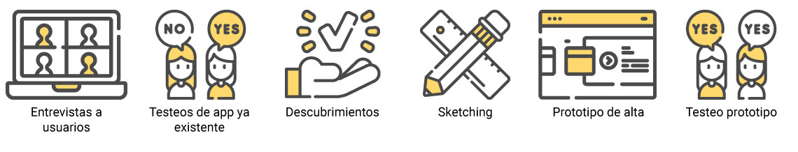
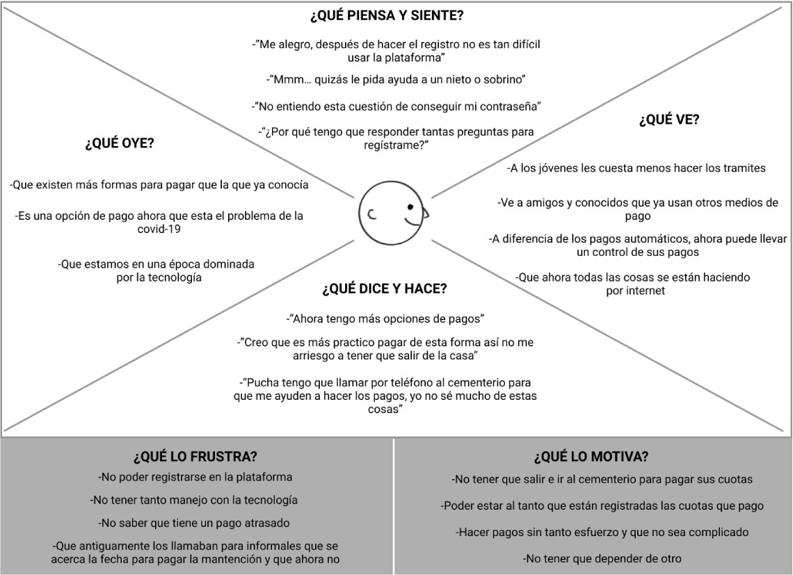
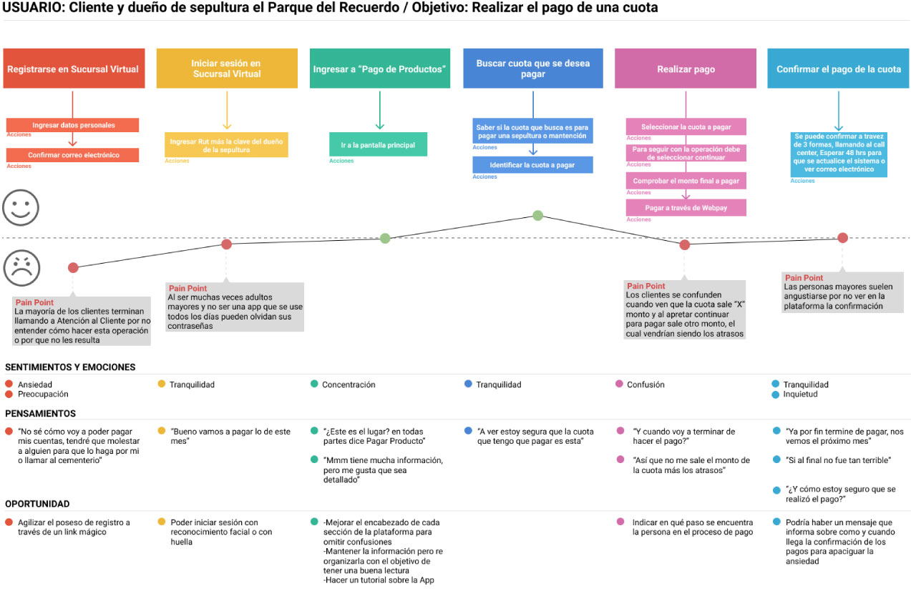
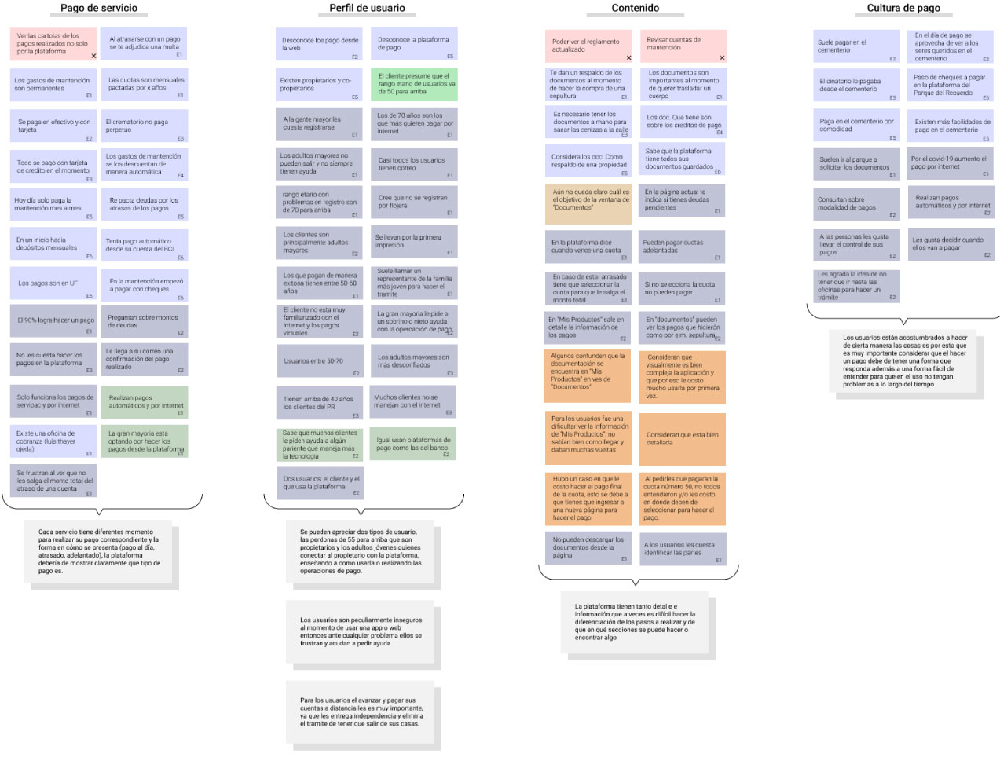
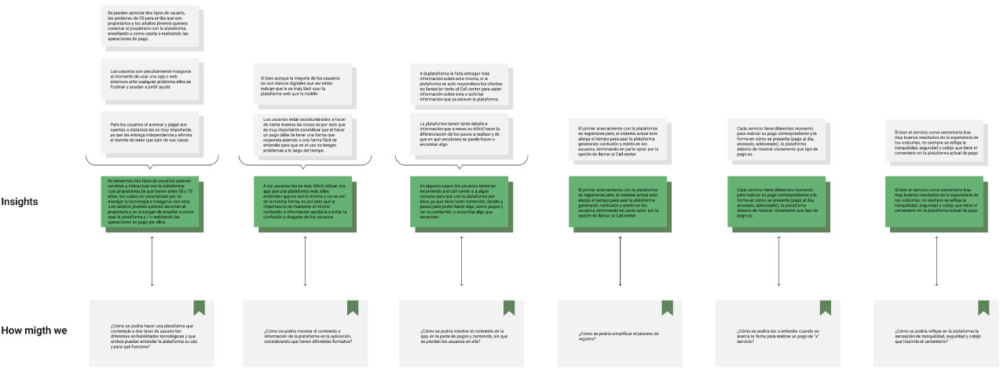
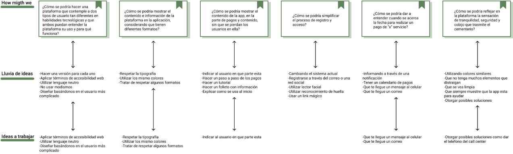

Sobre el proyecto
Sucursal Virtual es una aplicación movil que permite a los clientes del Cementerio Parque del Recuerdo realizar los pagos de los productos y servicios que contrataron.
Tiempo de trabajo: 2 Semanas.
Mi rol: Entrevista con usuarios, testeo, Insights, lluvia de ideas proceso de ideación, mapa de empatía, customer journey map, prototipado de alta en Adobe Figma.
Trabajo multidisciplinario entre diseñador movil y UX designer
Desafío
Re-diseño de la plataforma "Sucursal Virtual" para dispositivos Mobile, la nueva versión busca mejorar la experiencia del usuario al momento de realizar el pago de cuotas por bienes adquiridos a través del cementerio, visualizar el historial de pago, contratos y documentación existentes. Evitando consultar esta información o realizar los pagos de manera presencial.
Proceso de Investigación
Con base en la metodología Design Thinking se llevó a cabo el desarrollo de investigación y diseño de la aplicación, el proceso de investigación paso por diversos altibajos, ya que diseñar una aplicación para un servicio que originalmente se realiza de manera presencial y no online fue sumamente dificultoso, como equipo nos enfrentamos a una pandemia que complicaba el realizar ciertas operaciones, pero a pesar de ello el ingenio y las ganas de llegar a un buen resultado nos permitieron realizar el proyecto hasta el final.
Mapa de empatía
Conocer a nuestros usuarios es lo más importante y una forma de aplicar nuestra investigación sobre ellos es a través de Empathy map o Mapa de empatía, en él se plasmará el entorno personal y social del usuario y nos dará a conocer alguna arista que no se ha trabajado aún. Gracias al Mapa de empatía se descubrió que el usuario presentaba problemas para realizar sus pagos debido a que la mayoría de ellos no son nativos digitales y este fue el principal punto que se trabajó en el proyecto.
{kind=link}
Customer Journey Map
A través del Costomer Journey Map analizamos el nivel de dificultad que presenta el usuario desde que se registra a la aplicación hasta la confirmación en el pago de una cuenta, descubriendo así los mayores puntos de dificultad son el ingreso a la aplicación y la realización de un pago.
{kind=link}
Insights
{kind=link}
¿How might we?
{kind=link}
Lluvia de ideas
{kind=link}
{kind=link}
{kind=link}
Conclusión y aprendizajes
Trabajar en conjunto con el Cementerio Parque del Recuerdo fue en sí un desafío desde el primer día, conocer una área que nunca imagine que trabajaría, aprender de sus trabajadores y usuarios, condujo a un proyecto que ponía en juicio mis habilidades como UX/UI, principalmente por el contexto pandemia, en los primeros meses de pandemia me hice responsable de este proyecto y fue el primero en donde tuve que replantearme el cómo realizar una investigación que sea 100% remota.
Finalmente a pesar de las problemáticas presentadas se logró re-diseñar la aplicación con un fuerte enfoque en su accesibilidad para personas no nativamente digitales.